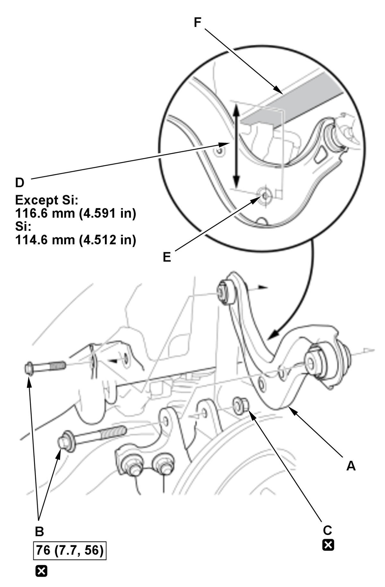

Rear Upper Arm Removal and Installation: Installation
NOTE: How to read the torque specifications .
- Upper Arm - Install

Courtesy of HONDA, U.S.A., INC.1. Loosely install the upper arm (A) with the new mounting bolts (B) and the new nut (C). 2. Place a floor jack under lower arm B.
3. Raise the suspension until the indicated clearance (D) is achieved between the hole of the upper arm (E) and the lower surface of the rear frame (F) as shown.
4. Tighten the upper arm mounting bolts to the specified torque.
- Rear Suspension Stroke Sensor - Connect (Type-R)
1. Connect the rear suspension stroke sensor to the upper arm . - Rear Wheel - Install
- Wheel Alignment - Check